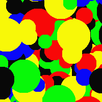
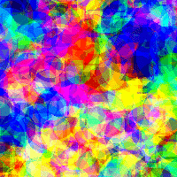
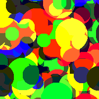
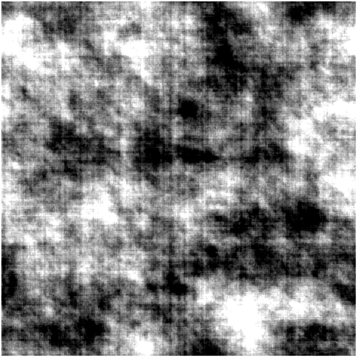
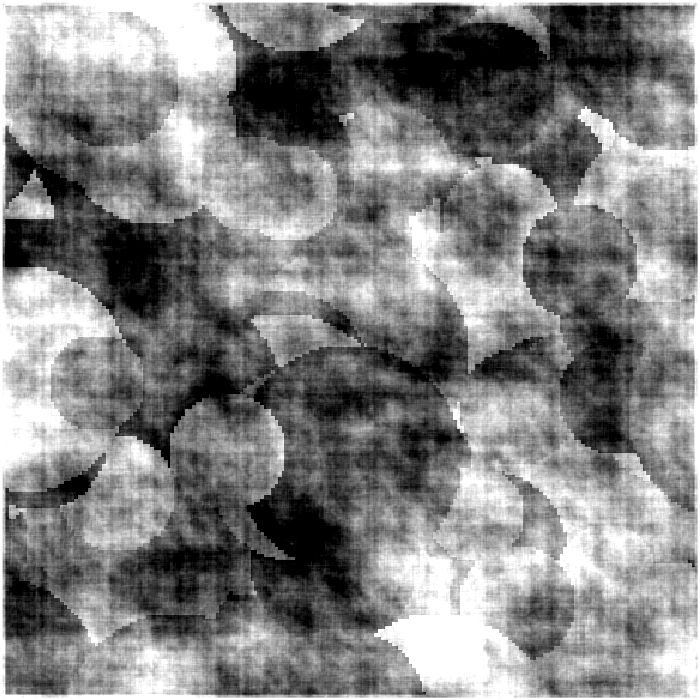
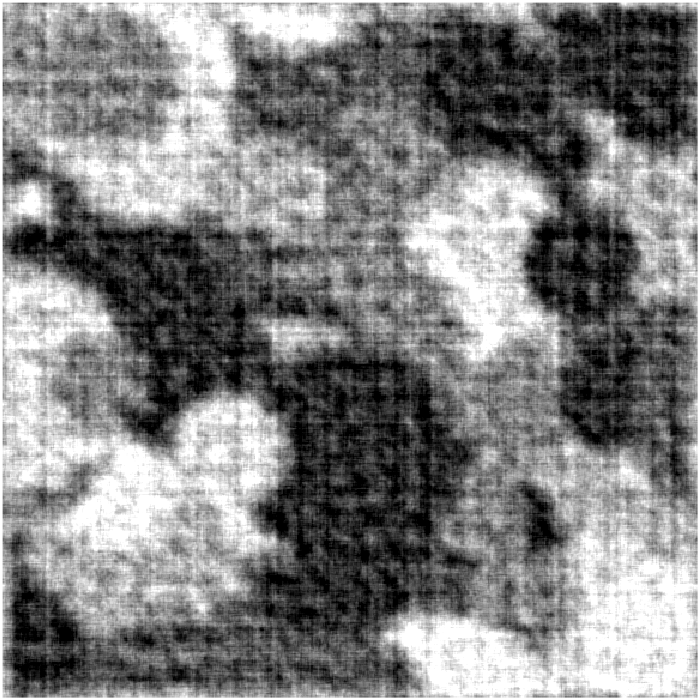
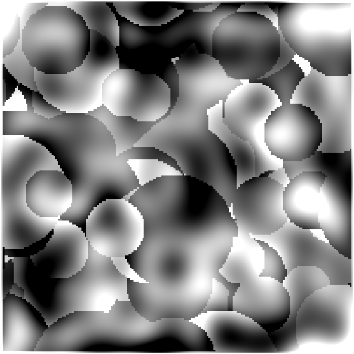
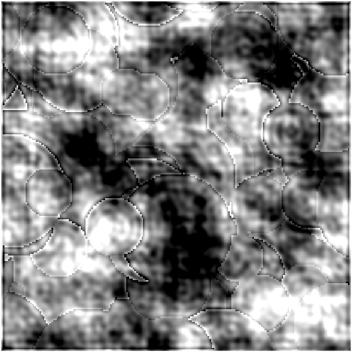
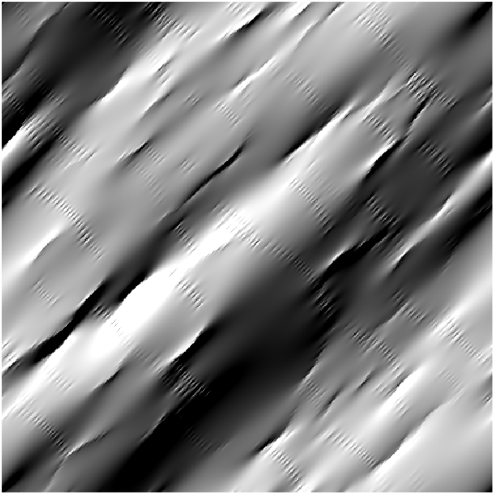

CFS-Crafter Help Information
CFS-Crafter is an open-source MATLAB application designed
for precise control, manipulation, and analysis of CFS stimuli. As the
application does not require prior expertise in image processing and
analysis, it provides an accessible platform for improving stimulus
control, increasing comprehension of CFS findings, and generating more
effective CFS animations.
Information about the screen on which the user intends to present the stimuli
must be manually entered. This provides the basis for calculating
certain basic parameters. Users can only proceed to the next step
after completing all required screen information.
1.1. Screen Refresh Rate (Hz)
Screen Refresh Rate should be set to the refresh rate of the
screen on which the stimulus will be presented. An incorrect screen refresh
rate will lead to errors in the frame rate of the created stimuli and other
temporal features.
1.2. Viewing Distance (cm)
Viewing Distance is the distance from the participant's
eyes to the screen during the experiment. An incorrect viewing distance will
lead to errors in the calculation of parameters related to the degree of visual
angle.
1.3. Screen Resolutions (pixels) & Screen Dimensions (cm)
CFS-Crafter reads the resolutions and
dimensions of the current screen and inputs them as the default
values. If the user intends to use the stimuli on a different screen, these
values must be changed manually. Errors in this information will result in errors in spatial frequency and
other spatial
features.
2. Choose Function
Creation allows the user to create various types of
CFS-Crafter-Mask, which can be saved as a .mat file with related information or as a .mp4
video file.
-
Details about traced item pattern masks in Creation.
-
Details about preview & saving CFS-Crafter-Masks & Image.
Conversion allows the user to convert a set of images to a
CFS-Crafter-Mask, such that it can be modified or analysed using CFS-Crafter.
Modification allows the user to apply
spatial/temporal/orientation filtering and phase scramble to
CFS-Crafter-Mask or Image.
Analysis allows the user to analyse and compare the
descriptive statistics, spatiotemporal frequencies & colour contents
of multiple stimuli (CFS-Crafter-Mask
or Image).
-
Details about edge detection in Analysis.
3. Examples Library

Traced Face Pattern

Traced Object Pattern

Image Sequence

Before Filtering

Bandpass Temporal Filtering

High-Pass Temporal Filtering

Circle Mondrian

Square Mondrian

Diamond Mondrian

RGB Colored Mondrian

White Noise Fill

Pink Noise Fill

White Noise Mask

Pink Noise Mask

Full Freq Scramble

Partial Scramble

High Freq Scramble

Low Freq Scramble

Bandpass Scramble

Orientation Filtered